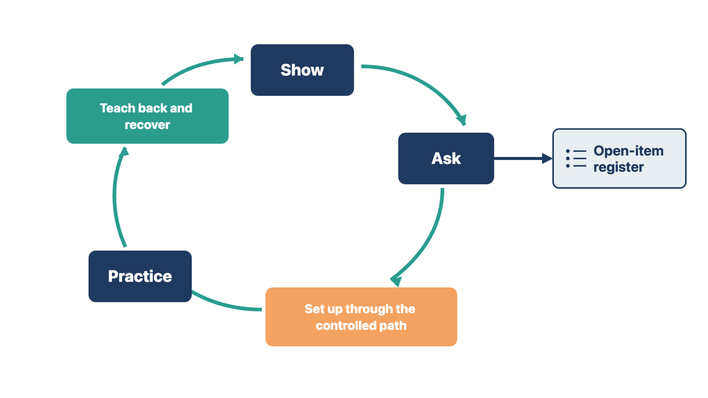

If you train on an unknown or unfinished build, the competence records prove nothing. Users may also confuse training data with real patients.
An environment is one copy of the system with its own data and settings. Production is the live copy that holds real patient records. A release ID is the label that names the exact version of the build. Technical acceptance means the builder's planned checks passed for that release.
Use a stable, approved environment that matches the build you teach. Label it clearly so users know whether they are in training, testing, or production.
Before each session, confirm:
Early demonstrations can happen before this check if you label them as demonstrations. Do not collect formal competence evidence against an unfinished or unidentified build.
Do not train on live patient records for convenience. Do not put real passwords on a shared slide or worksheet. If the client authorizes a production demonstration, show the least information needed and follow its privacy and security rules.
Rule: Collect competence evidence only in an identified, technically accepted release.
Example A. The referral build finished last night and has no release ID. You run a labeled demonstration and hold the competence checks. Example B. The scheduling release is recorded and accepted. You run the class and record competence. The difference is whether the release is identified and accepted.
Check yourself
People forget software steps they do not use. Staff trained weeks before go-live may also learn screens that later change after QC, data conversion, or interface work. Their competence records then describe a build that no longer exists.
This course teaches training (Modules 5 and 6) before quality control (Module 7), data conversion (Module 8), and integrations (Module 9). That order is on purpose: training sessions reveal design problems. On a real project, keep two kinds of sessions apart.
Schedule final end-user training as close to go-live as the calendar allows. For providers, that is usually the last 2–4 weeks. Plan backward from the go-live date:
Keep a short list of workflows that changed between releases. Refresh only the roles each change affects, and recheck those scenarios. The clinic agrees to the calendar. You recommend the timing and explain the risk. Before go-live, the readiness work in Module 11 checks that each user's training is current.
Rule: Hold final end-user training close to go-live, on the tested release that will go live.
Example A. Cedar Point's providers train three weeks before go-live, on the accepted go-live release. Their competence records name that release. Example B. Another clinic trained its schedulers nine weeks out. A later release changed the reschedule screen. You hold a 30-minute refresher for schedulers only and recheck the reschedule scenario.
In both cases, competence must match the release that goes live.
Check yourself
Without a separate training copy, learners may practice where real patients live. A mistake can then send a real reminder, prescription, or claim.
Many large electronic health record (EHR) products give each client separate build, test, training, and production environments. Some smaller vendors give a clinic only one production copy. Others add a shared demonstration site.
The 2025 SAFER Guide on System Management recommends a separate training environment that looks different on screen. SAFER stands for Safety Assurance Factors for EHR Resilience. These guides are national safety checklists for EHR use. The guide accepts that some work happens in production with test patients, under tight controls. You cannot create the missing environment, but you can make up for it. Module 4 covers the discovery questions. This section covers training.
Ask the vendor which of these it supports. Then lay them out for the client:
A compensating control is a safeguard that reduces a risk you cannot remove. For any option that touches production, confirm these controls in writing:

You own the analysis. You list the options, risks, and controls, and you record the release and environment each session uses. The vendor confirms what is technically possible. The client's accountable authority chooses the option, after hearing from the privacy and security leads. Record that decision before formal training starts. If no option can support competence evidence, say so in writing. Then plan a supervised recheck after go-live.
Rule: When training must touch production, the client decides in writing, and the controls are confirmed before the first session.
Example A. Cedar Point has one production copy with no patient data yet. The practice manager approves pre-live production with test-patient names and outbound messages off. Example B. A clinic that is already live needs to train a new hire. Its practice manager approves test patients in production with a cleanup check after each session. Different options, same rule: the client decides, and the controls come first.
Check yourself
You cannot check "understands scheduling." If you cannot see the skill, you cannot record competence.
An observable objective states what the learner will do in a practice scenario. Examples:
Each objective should produce visible evidence in a practice scenario.
Rule: Write what the learner will do, so you can watch it happen.
Example A. "Know the check-in screen" becomes "Check in a returning patient and update a changed address." Example B. "Understand forms" becomes "Send the intake packet for signature and resend an expired request." Each rewrite names an action you can watch.
Check yourself